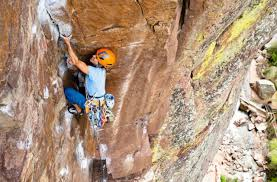

Work Experience
Classroom Technology Assistant
Texas Christian University
Febuary 2021 - Present
IT Instructional Support provides the TCU community instructional technology and support for classroom instruction, presentations, and special events. Duties include troubleshooting A/V technology issues over the phone, delivering and picking-up requested portable A/V equipment, and performing classroom A/V checks.
Information Technology Intern
Many Mansions
May 2019 - August 2019, August 2020 - November 2020, May 2021 - August 2021
Help with the technological needs of the organization, including the help desk, network, computers, servers, telephones, internet, printers, security cameras, and other areas.
Education
Texas Christian University, 2018-2022
BS in Computer Information Technology
Texas Christian University is a private research university in Fort Worth, Texas. It was established in 1873 by brothers Addison and Randolph Clark as the Add-Ran Male & Female College. It is affiliated with the Christian Church. The campus is located on 272 acres about 3 miles from downtown Fort Worth.
Oaks Christian High School, 2014-2018
High School Diploma
Oaks Christian School is a co-educational, college-preparatory, non-denominational Christian school serving grades 5–12. Oaks Christian School is located on 25 acres in Westlake Village, Los Angeles County, California. The school was established in 2000.
Hobbies and Interests
Video Games
I enjoy playing most modern video games and my favorite genres include fps (first person shooters), strategy, and competitive games.
My Favorite games:
- Hunt: Showdown
- Counter Strike: Global Offensive
- Beat Saber
- Rocket League
Weightlifting
I enjoy going to the gym and lifting weights and getting stronger while doing so. I like doing compound lifts seeing my progress on how heavy I can go on the compound lifts. My favorite compound lifts include bench press, deadlift, and cleans.
Maxes:
Bench Press: 150
Deadlift: 425
Clean: 225
Squat: 275
Mountain Climbing
Moutain climbing is one of the outdoors activities that I have gotten into
recently and have really enjoyed and getting better in. I have mainly climbed
indoors on fake walls but really would like to go outdoor climbing more.
I can climb up to a 5.9 difficulty right now and can almost climb some 5.10 routes.